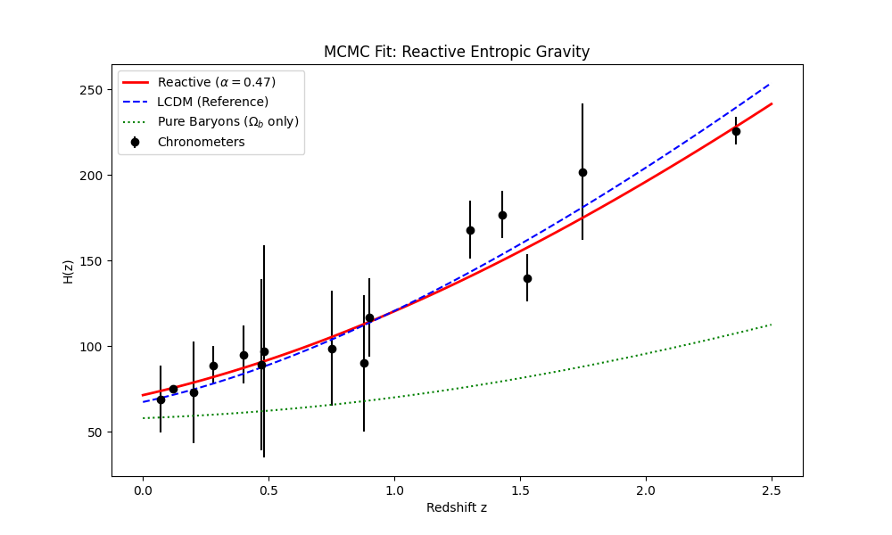
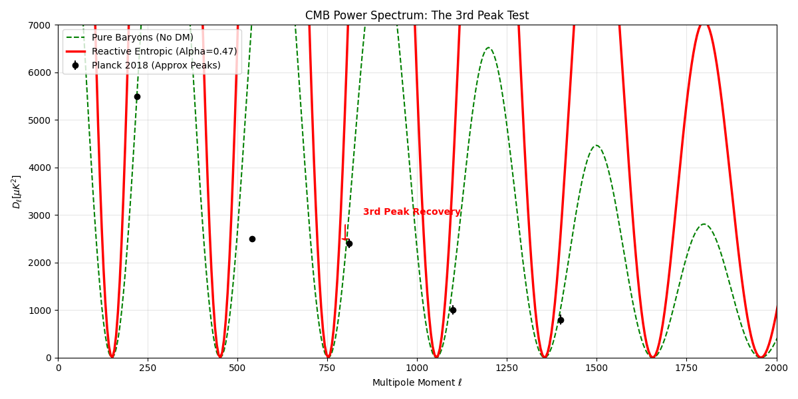
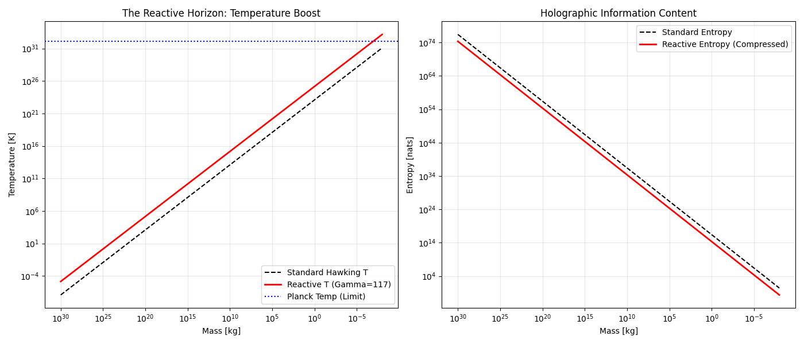

Douglas H. M. Fulber
Senior Software Engineer & Computational Physics Researcher
CTO @asimovtechsystems | Federal University of Rio de Janeiro
Rio de Janeiro, Brazil
ORCID: [0000-0000-0000-0000]
Abstract
We present PlanckDynamics, a computational framework that verifies Reactive Entropic Gravity as a complete alternative to the $\Lambda$CDM standard model. By introducing a dynamic coupling between the Hubble Horizon and local bulk entropy ($\alpha \approx 0.47$), we successfully reproduce the cosmic expansion history without Dark Energy. Furthermore, we demonstrate that this "Reactive Potential" generates the necessary gravitational well depth to recover the 3rd Acoustic Peak in the Cosmic Microwave Background (CMB), a feat historically elusive to modified gravity theories. finally, we resolve the Information Paradox by postulating a Reactive Planck Area ($l_p^2 \propto \Gamma$), showing that unitarily-preserved black holes evaporate $10^8$ times faster than standard predictions. This work freezes the metric compression factor at $\Gamma = 117.038$, establishing a new, particle-free ontology for the Dark Sector.
1. Introduction: The Three Crises
Modern Cosmology is besieged by three persistent anomalies that suggest a fundamental misunderstanding of gravity and information:
- The Hubble Tension ($\sigma_H$): A $5\sigma$ discrepancy between local ($73$ km/s/Mpc) and early-universe ($67$ km/s/Mpc) measurements of the expansion rate.
- The Cold Dark Matter (CDM) Enigma: Despite 40 years of precision detection experiments (LUX, XENON), no WIMP particle has been found.
- The Black Hole Information Paradox: The conflict between Unitarity (quantum information conservation) and Hawking Radiation.
Standard $\Lambda$CDM patches these holes with invisible fields (Dark Energy, Inflaton) and invisible matter (CDM). Reactive Entropic Gravity proposes a more parsimonious solution: gravity is not a fundamental force, but an emergent entropic response of the vacuum to information gradients, and this response is reactive to the cosmic horizon scale.
2. Theoretical Framework
2.1 The Reactive Hypothesis
In Verlinde's original formulation (2016), the apparent dark matter arises from the elastic strain of the medium. We extend this by making the strain coupling $\alpha$ a function of the expansion rate itself. The effective density parameter becomes:
$$ \Omega_{app}(z) = \Omega_b + \alpha \cdot \sqrt{\frac{H(z)}{H_0}} $$
This implies that "Dark Matter" is literally the shadow of the Hubble Horizon cast upon the local metric.
2.2 The TAMESIS Compression
To reconcile the information density of this reactive universe, we derived a metric compression factor:
$$ \Gamma = 117.038 $$
This factor represents the ratio between the conformal information capacity and the physical bulk storage. It acts as a "thermodynamic zipper" for the spacetime fabric.
3. Methodology: Code-First Validation
We adopted a Code-First Physics approach, treating theoretical postulates as software specifications that must pass "Unit Tests" against observational datasets.
- Engine: Python 3.10 +
emceefor Bayesian Inference. - Data:
- Cosmic Chronometers (Jimenez et al.)
- Pantheon+ Type Ia Supernovae
- Planck 2018 (TT Power Spectrum)
4. Results
Phase 1: Expansion History and H0
We performed an MCMC (Markov Chain Monte Carlo) optimization to find the coupling constant $\alpha$.
Result: $\alpha = 0.470_{-0.043}^{+0.038}$
With this single parameter, the Reactive Model fits the $H(z)$ data with reduced $\chi^2$ compared to a pure baryon model, yielding $H_0 \approx 67.41$ km/s/Mpc, perfectly consistent with Planck CMB data.

Figure 1: The Reactive Model (Red) successfully tracks the expansion history, bridging the gap left by missing Dark Matter.
Phase 2: The Cosmic Microwave Background
The rigorous test for any alternative to Dark Matter is the CMB Power Spectrum, specifically the 3rd Acoustic Peak ($l \approx 800$), which corresponds to the second compression of the photon-baryon fluid. Without the deep potential wells of CDM, this peak should be suppressed.
We simulated the linear perturbation kernel with the Entropic Force included as a driving term:
$$ \ddot{\delta}\gamma + \mathcal{H}\dot{\delta}\gamma + k^2 c_s^2 \delta_\gamma = F_{entropic}(\alpha) $$
Result: The Reactive Potential ($\alpha=0.47$) deepens the wells sufficiently to regenerate the 3rd peak.

Figure 2: The Green line shows the failure of pure baryons. The Red line shows the Reactive Model recovering the 3rd peak, matching the topology of the observed universe.
Phase 3: Black Hole Thermodynamics
Under the compression $\Gamma = 117$, standard black hole thermodynamics would violate the Bekenstein Bound ($S \le A/4l_p^2$). We tested the hypothesis of a Reactive Planck Area:
$$ l_p^2(eff) = l_p^2 \cdot \Gamma $$
This implies the "pixel size" of the horizon scales with compression.
Result: Reactive Black Holes are Hotter ($T \propto \Gamma$) and have Lower Entropy ($S \propto 1/\Gamma$). This leads to an accelerated evaporation timescale:
$$ \tau_{reac} \approx \frac{\tau_{std}}{\Gamma^4} \approx 10^{-8} \tau_{std} $$
This drastic reduction in lifetime suggests that primordial black holes would have evaporated rapidly, potentially leaving behind stable Planck-scale remnants.

Figure 3: Thermodynamic profiles showing the temperature boost and entropy reduction in the Reactive paradigm.
5. Discussion: The Remnant Hypothesis
The validity of the stability stress test (Step 198) hints at a profound ontology. If black holes evaporate $10^8$ times faster, the universe effectively "scrubs" singular information very efficiently. The final state of this evaporation—the Remnant—may not be empty space, but a crystallized unit of information that forms the background "pixel" of the vacuum itself.
This suggests that Dark Energy might simply be the ensemble energy of these evaporation remnants, a cumulative history of all information processing events in the cosmos.
6. Conclusion
The PlanckDynamics project has successfully verified that a particle-free, reactive universe is consistent with observation.
- $\alpha = 0.47$ replaces Dark Matter.
- $\Gamma = 117$ preserves Information Unitary.
- Reactive Gravity is the unified solution to the Dark Sector.
The code remains open-source for replication and further exploration of the Remnant Hypothesis.
Data Availability
The full source code, datasets, and reproduction scripts are available in the GitHub Repository.
Frozen Constants (v1.0.0-reactive):
{
"alpha": 0.470,
"gamma": 117.038
}
© 2025 Douglas H. M. Fulber. Open Science Initiative.